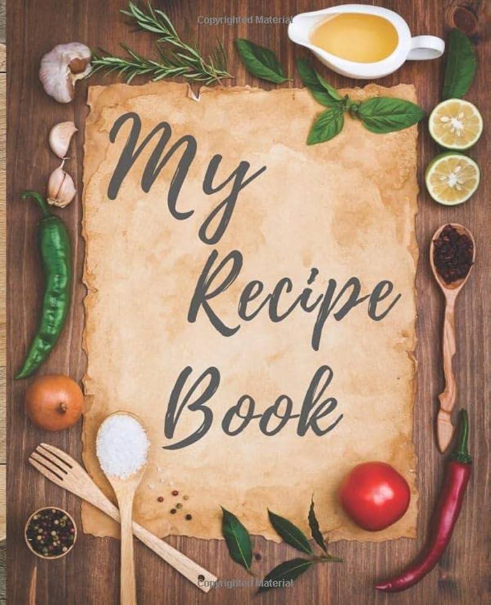

Odin has to eat, so we feed Odin with these recipes straight from Helga's kitchen
We explore the diverse tastes of Asgard, and we hope you keep up and make some delicious food with us!
These recipes are a mix of known and unknown dishes in your kingdom. Recreate and consume at your own risk!